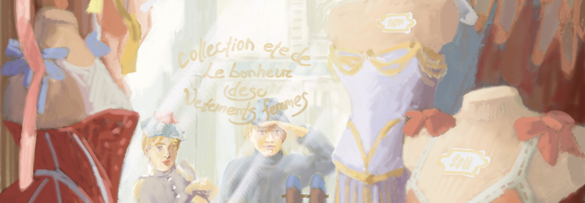

Проекты

Ковёр
История о непослушном ковре и одиноком дедушке — Свердловская киностудия.

Сад будущего
Мальчик с помощью волшебной птицы попадает в миры — версии его собственного сада.

Искра жизни
Люди цепляются за последнее, что у них осталось, — за искру жизни.

Эдем
Экипаж землян терпит крушение на неизученной планете, где живут двутелы.

Рейнеке-лис
Под масками зверей — феодальное общество и хитрый лис Рейнеке.

Принц Аквамарин
Проклятый принц проходит испытания, чтобы разрушить чары и найти возлюбленную.

Дамское счастье
Витрины и кружева универмага-гиганта, где одни богатеют, а другие разоряются.

Птицы
Афиняне с птицами основывают между небом и землёй Тучекукушкин град.